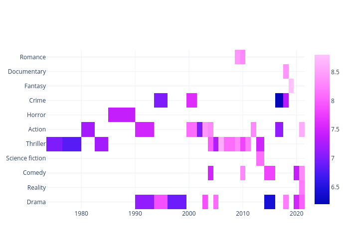
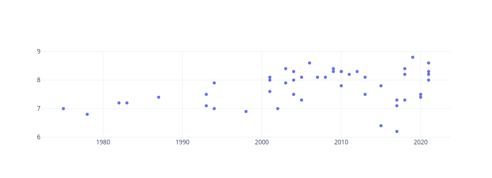
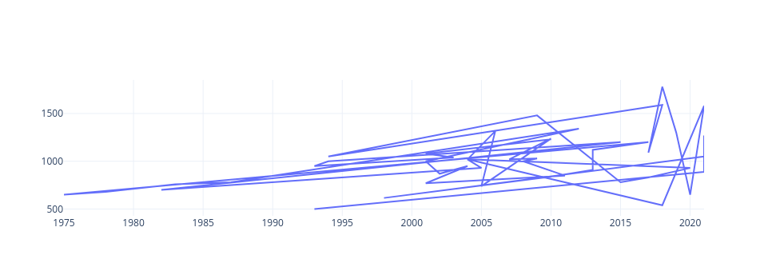
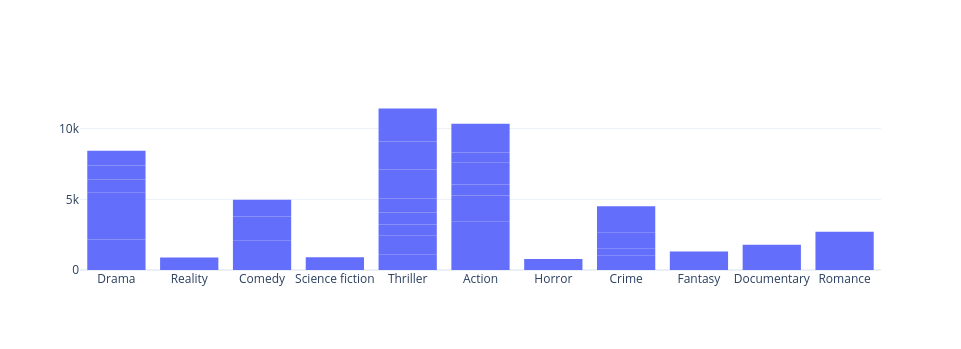

Nous sommes ravis de vous présenter un aperçu captivant de notre projet de datavisualisation centré sur les "TV Shows". À travers une série de graphiques, nous avons exploré divers aspects de l'industrie audiovisuelle pour extraire des informations pertinentes et éclairantes. Voici un résumé de nos principales découvertes :.
Le Heatmap est une perspective sur les notations des séries & films en se basant sur l'année de sortie et le genre. Les couleurs associées aux notations élevées, révèlent une tendance marquée : les films et séries d'action les plus récents obtiennent les meilleures évaluations, le genre crime semble être moins apprécié. On remarque également que plus la production est récente, plus elle est favorablement évaluée Les zones de la carte thermique où les couleurs sont plus claires indiquent des notations exceptionnelles, En revanche, les nuances plus intenses mettent en évidence les domaines où les performances sont relativement moins favorables. On déduit que la date des productions joue un rôle déterminant dans l'appréciation générale, avec des préférences distinctes pour certains genres.
Dans cette première visualisation, On a opté pour un graphique de dispersion (Scatter Plot) afin d'explorer la relation entre l'année de sortie des spectacles (Release Year) et leur notation (Rating). En plaçant l'année de sortie sur l'axe des abscisses et la notation sur l'axe des ordonnées, le graphique permet une observation intuitive des tendances. Les résultats obtenus mettent en évidence une corrélation intéressante : la majorité des spectacles bien notés se concentrent après l'année 2000. Cette constatation suggère que les productions plus récentes ont tendance à recevoir des évaluations plus favorables de la part du public. On peut déduire de ces données que les spectateurs ont une préférence marquée pour les créations plus récentes, probablement en raison de l'évolution des normes de production, des technologies utilisées.
Le graphique linéaire souligne de manière explicite l'évolution des profits en fonction de l'année de sortie des spectacles. Les données révèlent une tendance ascendante, suggérant une croissance globale des profits au fil du temps. Plus spécifiquement, le pic de rentabilité se situe entre 2015 et 2020, indiquant une période où les spectacles ont généré un profit maximal. Cette observation suggère que les productions audiovisuelles de cette période ont été particulièrement lucratives, soulignant l'importance de la temporalité dans la rentabilité des spectacles.
Le diagramme à barres offre une vision des profits engendrés par chaque genre de spectacle, établissant une comparaison visuelle entre leurs performances financières respectives. Les résultats indiquent que les genres thriller, action, et drama se distinguent successivement en tant que catégories les plus lucratives. Cette hiérarchie de rentabilité suggère que les productions appartenant à ces genres ont démontré une attractivité financière plus marquée par rapport aux autres catégories. Ces informations peuvent orienter les stratégies d'investissement et de production, mettant en avant les genres qui présentent un potentiel de rentabilité plus élevé pour les décisions futures dans l'industrie audiovisuelle.
